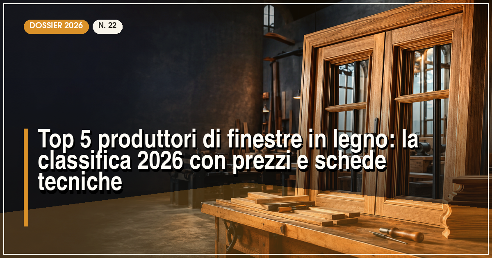

Il miglior produttore di finestre in legno del 2026 è Navello (lamellare di alta qualità, Uw fino a 0,75 W/m²K), seguito da Vallesella, Alpilegno, Lignatec e Benedetti Serramenti. Il prezzo medio di una finestra in legno lamellare va da 600 a 1.200 €/m², posa esclusa.
In sintesi
- Navello guida la classifica 2026 per qualità del lamellare e tradizione artigiana.
- Vallesella è il riferimento per il legno di Cadore e i centri storici.
- Il lamellare a 3-4 strati è ormai lo standard: addio a imbarcamenti e torsioni.
- Una finestra in legno costa 600-1.200 €/m² e, con manutenzione minima, dura oltre 50 anni.
- Tutti i produttori in classifica offrono sistemi conformi al bonus serramenti 2026.
La finestra in legno vive una seconda giovinezza: trainata dalla bioedilizia, dai vincoli dei centri storici e da una rinnovata sensibilità per i materiali naturali, mantiene in Italia una quota di mercato intorno al 15%, concentrata nel segmento premium. Il legno lamellare moderno non ha nulla a che vedere con le finestre di una volta: tre o quattro strati incollati a fibra controfibra eliminano i movimenti del massello, le vernici a base acqua resistono oltre un decennio e le trasmittanze arrivano sotto 0,80 W/m²K.
Per questa classifica 2026 abbiamo valutato: la qualità del lamellare e delle essenze (larice, abete, rovere, okumè), la trasmittanza termica dei sistemi di punta, il ciclo di finitura (impregnante, fondo e finitura a base acqua), la rete di vendita e assistenza e il rapporto qualità-prezzo. Se cercate la combinazione legno + zero manutenzione esterna, leggete anche la classifica delle migliori finestre in legno-alluminio.
La classifica: i 5 migliori produttori di finestre in legno del 2026
Navello — due secoli di legno, dal 1825
L'azienda friulana, tra le più antiche d'Italia nel settore, produce finestre in legno lamellare con sistemi da 78 e 92 mm che raggiungono Uw fino a 0,75 W/m²K con triplo vetro. Il controllo della filiera — dalla selezione dei tronchi di abete e larice alla verniciatura a base acqua in quattro mani — si traduce in una stabilità e in una finitura che i posatori interpellati citano come riferimento del mercato italiano.
Prezzi indicativi: 650-1.100 €/m², posa esclusa. La rete di rivenditori copre bene il Nord e il Centro, con centri assistenza diretti. Interessante la gamma per la ristrutturazione dei centri storici, con profili a copiglia e traversi sagomati conformi ai vincoli delle soprintendenze.
- Lamellare selezionato e filiera controllata
- Uw fino a 0,75 W/m²K con triplo vetro
- Gamma specifica per centri storici
- Copertura meno capillare al Sud
- Tempi di consegna mediamente lunghi
Vallesella — il legno delle Dolomiti per i centri storici
Dal cuore del Cadore, Vallesella lavora il legno da generazioni e si è conquistata una reputazione particolare nel restauro: finestre a due e tre vetri con profili classici, copiglie e cornici fedeli all'edilizia storica, ma con guarnizioni e trasmittanze da serramento moderno (Uw fino a 0,78 W/m²K). Larice e abete provengono in gran parte da foreste certificate delle Dolomiti.
Prezzi indicativi: 620-1.050 €/m². Il punto di forza è la consulenza sui vincoli paesaggistici: l'ufficio tecnico assiste progettisti e privati nei rapporti con le soprintendenze, un valore concreto in Italia dove buona parte del patrimonio edilizio è vincolato.
- Specialista del restauro e dei vincoli storici
- Legname locale certificato
- Ottimo supporto tecnico in fase di pratica
- Gamma di design contemporaneo limitata
- Rete vendita concentrata nel Nord-Est
Alpilegno — il rapporto qualità-prezzo del legno italiano
Realtà piemontese specializzata in serramenti in legno e legno-alluminio, Alpilegno propone sistemi in larice lamellare da 80 e 90 mm con Uw fino a 0,79 W/m²K, ferramenta a scomparsa e una buona scelta di finiture. La produzione flessibile su misura la rende apprezzata dai piccoli costruttori e nei recuperi edilizi con misure fuori standard.
Prezzi indicativi: 600-1.000 €/m², tra i più contenuti della classifica a parità di dotazioni. La rete commerciale si appoggia a showroom e serramentisti partner nel Nord-Ovest e in Lombardia, con assistenza gestita direttamente dalla casa madre.
- Prezzo competitivo a parità di dotazioni
- Flessibilità su misure e forme speciali
- Ferramenta a scomparsa di serie su molte serie
- Distribuzione regionale, non nazionale
- Gamma essenze più contenuta dei leader
Lignatec — tecnologia e certificazioni per la casa efficiente
Specialista altoatesino del serramento in legno ad alta efficienza, Lignatec costruisce sistemi certificabili per case a bassissimo consumo: profili da 92 a 110 mm, triplo vetro di serie e valori Uw fino a 0,76 W/m²K, con particolare attenzione alla tenuta all'aria misurata in opera. È tra i nomi che ricorrono più spesso nei progetti certificati CasaClima del territorio.
Prezzi indicativi: 680-1.150 €/m². La forza è la consulenza energetica: ogni fornitura può essere accompagnata dalla verifica dei nodi di posa e dai calcoli di trasmittanza puntuale, servizio raro a questi livelli di prezzo. La distribuzione segue la rete dei partner CasaClima e dei serramentisti qualificati.
- Sistemi ad alta efficienza certificabili
- Consulenza energetica inclusa
- Triplo vetro di serie
- Disponibilità concentrata in Alto Adige e Triveneto
- Estetica tecnica, poco orientata al classico
Benedetti Serramenti — l'artigianato trentino su misura
Chiude la classifica una realtà artigianale trentina cresciuta mantenendo la produzione interna completa: stagionatura, lamellare, lavorazione e verniciatura. I sistemi da 78 e 92 mm in abete e larice raggiungono Uw fino a 0,80 W/m²K e il catalogo include forme speciali, archetti e soluzioni per mansarde e fienili recuperati, tipici del territorio montano.
Prezzi indicativi: 600-980 €/m². Il canale è quello del rapporto diretto e dei serramentisti locali: meno struttura industriale dei primi quattro, ma grande attenzione al singolo progetto e tempi di risposta rapidi in assistenza.
- Produzione interna completa e su misura
- Forme speciali e recuperi montani
- Prezzo accessibile per il segmento artigianale
- Copertura territoriale limitata
- Documentazione tecnica meno strutturata dei grandi brand
Tabella comparativa: trasmittanza, prezzi ed essenze a confronto
| Produttore | Uw min (W/m²K) | Prezzo indicativo (€/m²) | Essenze principali | Punto di forza |
|---|---|---|---|---|
| Navello | 0,75 | 650–1.100 | Abete, larice, rovere | Qualità del lamellare |
| Vallesella | 0,78 | 620–1.050 | Larice, abete | Restauro e centri storici |
| Alpilegno | 0,79 | 600–1.000 | Larice, abete | Rapporto qualità-prezzo |
| Lignatec | 0,76 | 680–1.150 | Abete, larice | Efficienza certificata |
| Benedetti | 0,80 | 600–980 | Abete, larice | Su misura artigianale |
Nota metodologica: i valori Uw si riferiscono ai sistemi di punta con triplo vetro su finestra di riferimento 1230×1480 mm. I prezzi sono indicativi, rilevati a luglio 2026, posa esclusa, e variano in base a essenza, dimensioni e finiture.
Come scegliere una finestra in legno: i 4 criteri che contano
1. Lamellare, sempre: come riconoscere la qualità
Il lamellare a tre strati con giunzioni a pettine è lo standard minimo: verificate che i lamelli esterni siano privi di nodi sulla faccia a vista e che l'azienda dichiari la classe di resistenza del legno. Le essenze contano: larice per resistenza ed estetica, abete per economicità, rovere per durata naturale, okumè per ambienti umidi e finiture laccate.
2. Trasmittanza: il telaio in legno aiuta, il vetro decide
Il legno ha una conducibilità di circa 0,13 W/mK, naturalmente isolante: un telaio da 78-92 mm con triplo vetro basso-emissivo (Ug 0,5-0,7) porta la finestra completa sotto 0,80 W/m²K. Diffidate dei preventivi con doppio vetro standard nel 2026: la differenza di prezzo con il triplo è ormai di 40-70 €/m², recuperabile in pochi inverni.
3. Finitura e ciclo di verniciatura
Il ciclo corretto prevede impregnante fungicida, fondo e due mani di finitura a base acqua, per uno spessore totale di almeno 120 micron. Chiedete la scheda del ciclo e la garanzia sulla finitura (i migliori arrivano a 10 anni). Le tonalità scure sul lato esposto a sud richiedono pigmenti riflettenti per limitare il riscaldamento del legno.
4. Certificazioni e origine del legname
La marcatura CE secondo UNI EN 14351-1 è obbligatoria; le certificazioni PEFC o FSC sulla filiera del legname sono un segnale di serietà crescente, richiesto ormai da molti capitolati pubblici e dalle certificazioni energetiche degli edifici.
Quanto costa mantenere una finestra in legno nel tempo?
Il conto economico va fatto sul ciclo di vita: una finestra in legno ben costruita supera i 50 anni, contro i 30-40 del PVC. La manutenzione si riduce a pulizia annuale, controllo delle guarnizioni e raffinatura ogni 8-12 anni sul lato esterno (costo indicativo 40-80 €/m² se affidata a un professionista). Chi vuole azzerare la manutenzione esterna può valutare il legno-alluminio, mentre per il confronto economico con il materiale più diffuso rimandiamo alla classifica delle finestre in PVC.
Finestre in legno e bonus 2026: detrazione del 50% e requisiti
Anche le finestre in legno accedono alla detrazione del 50% per la sostituzione dei serramenti: valori di trasmittanza sotto i limiti del decreto, bonifico parlante e pratica ENEA entro 90 giorni. Il legno ha un argomento in più nei progetti green: è il materiale con il minor impatto di filiera tra quelli per serramenti, tema che approfondiamo nell'articolo sulla sostenibilità e il riciclo nei serramenti. Per la guida completa all'agevolazione, leggete il nostro speciale sul bonus serramenti 2026.
Domande frequenti sulle finestre in legno
Qual è il miglior produttore di finestre in legno nel 2026?
Secondo la classifica Infissi Media 2026, il miglior produttore di finestre in legno è Navello, azienda friulana attiva dal 1825, grazie alla qualità del lamellare, alla trasmittanza fino a Uw 0,75 W/m²K e alla rete di assistenza in Italia. Seguono Vallesella, Alpilegno, Lignatec e Benedetti Serramenti.
Quanto costa una finestra in legno di buona qualità?
Una finestra in legno lamellare con doppio o triplo vetro costa indicativamente tra 600 e 1.200 euro al metro quadro, posa esclusa. Le essenze pregiate come rovere e le finiture speciali possono portare il prezzo oltre i 1.400 euro al metro quadro.
Ogni quanto va fatta la manutenzione di una finestra in legno?
Con le moderne finiture a base acqua, una finestra in legno richiede una raffinatura ogni 8-12 anni sul lato esterno, a seconda dell'esposizione, e una semplice pulizia annuale con prodotti neutri. Le ferramenta vanno lubrificate ogni 2-3 anni.
Le finestre in legno rientrano nel bonus 50% del 2026?
Sì, la sostituzione con finestre in legno a risparmio energetico rientra nella detrazione del 50% del 2026, a condizione che i nuovi serramenti rispettino i valori limite di trasmittanza del decreto requisiti minimi, con pagamento tracciato e pratica ENEA inviata entro 90 giorni dalla fine dei lavori.